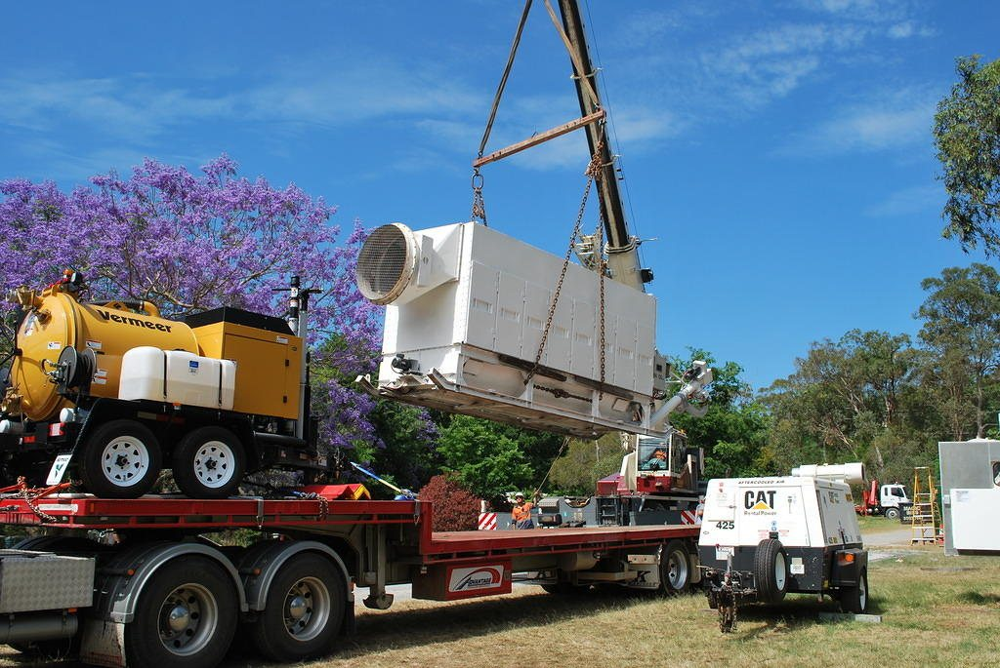
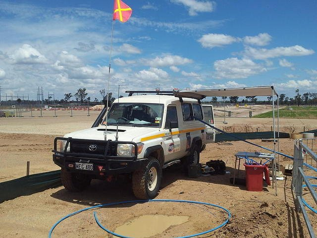

Fibre optics and data
Nationally accredited fibre and communications technicians, for single-mode and multi-mode installation and testing.

What is included
Every kind of work inside this service
Tap a heading to open it.
Fibre
- Cable splicing
- Drum tests
- Full compliance testing
- Terminations
- Fault finding
- Underground FOSC joints
Data and communications
- CAT6 cabling, termination and compliance testing
- Patch panels, routers and switches
- Copper-to-fibre converters
- CCTV with PoE NVR systems
- Wi-Fi installation and commissioning
Our own equipment
- Fusion splicers (Yamasaki Y85 and Fujikura)
- OTDR testers (Fluke and JDSU MTS 4000)
- JDSU light source meter
- Mine-spec 4x4 vehicles fitted out as mobile splicing rooms
Sectors
Where we do this work
Open a sector to see what we do there and the projects behind it.
SectorOil and gasLong cable runs across gas fields, laid and tested by our own crews.→SectorPortsCranes, straddles and container yards kept running.→SectorMiningUnderground and open-pit equipment, designed, refurbished and installed.→SectorCommercial, data and communicationsNetworks, security and wireless for working buildings.→SectorCouncils and roadsPublic works, from substations to street lights.→
Projects


Jobs where we have done it
Each one opens its own page.




Other services
One contractor for the rest of the job
ServiceHigh voltageNationally accredited HV cable jointers, experienced up to and including 33 kV, and HV commissioning technicians equipped for cable fault location and protection systems.→ServiceTunnelling and infrastructureElectrical work for tunnel construction, and assembly and maintenance of the machines that do the digging.→ServiceIndustrialFor mining, civil, engineering and construction clients, at every stage from electrical design to installation and 24/7 maintenance.→ServiceCommercialThe full range for commercial clients, from electrical design to installation and maintenance.→ServiceSwitchboards and controlBuilt in our own dedicated switchboard workshop, so quality and timing stay in our hands.→ServiceCable handlingCustom-built cable laying trailers, operated by our own trained crews.→ServiceMaintenance and 24/7 breakdownsOne number, answered day and night, for every branch.→
Talk to the people who will do the work.
One number for every branch, answered day and night.